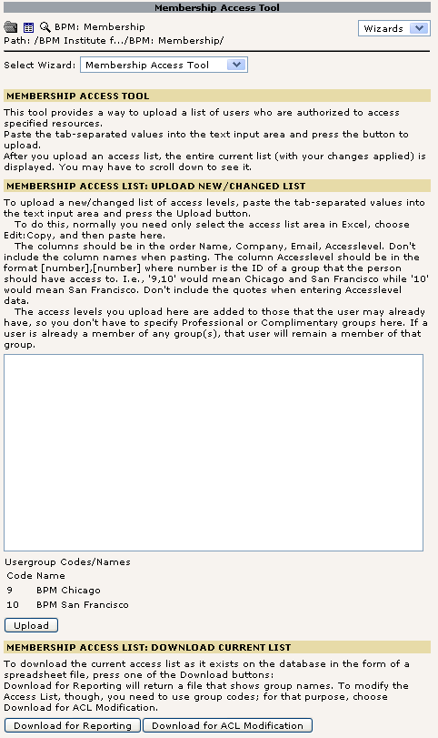
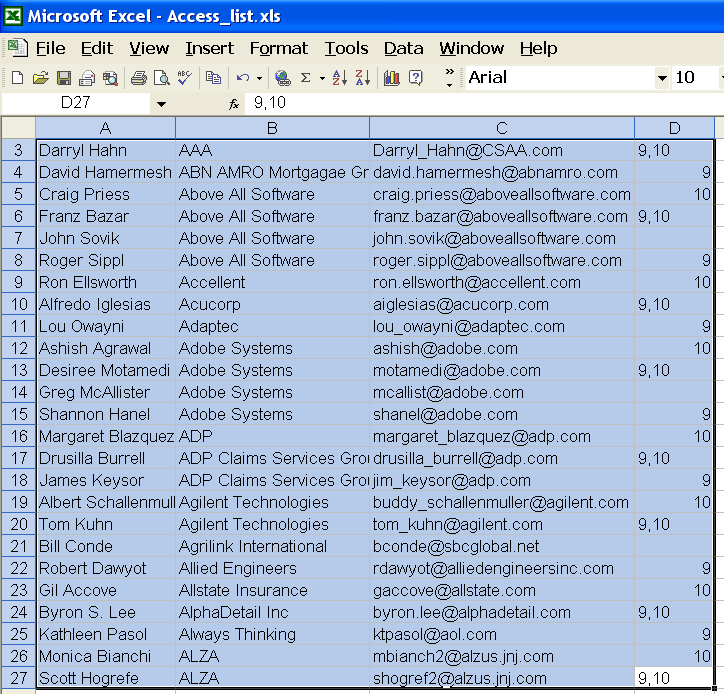
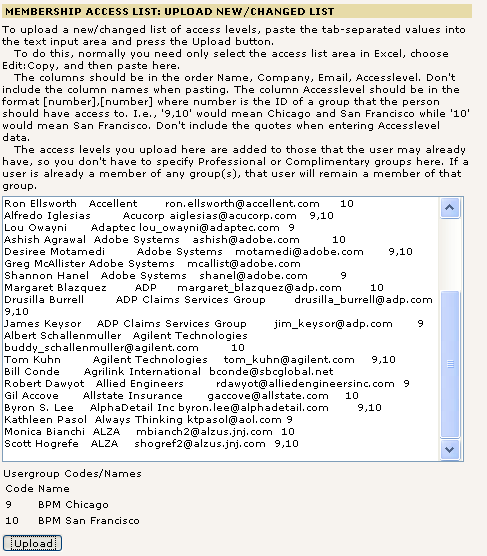
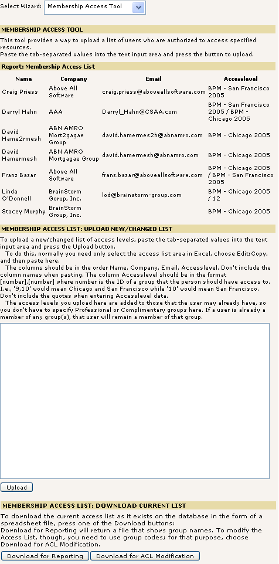
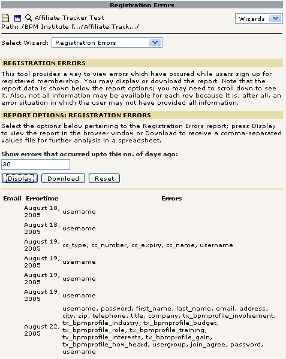

2. Create a backend script that uploads and associates an access control list to a frontend usergroup. See attached authorized user list. Then when user registers or modifies their user profile, if the frontend usergroup they're requesting is not allowed since their not in the ACL, save the record sans usergroup update and display error of such.
2.1. Create a backend reporting mechanism to query whose attempted to register or update their membership but has had errors. Error capturing extends to not just the usergroup failure but all sr_feuser_register errors like bad username or unanswered questions. See news_lead and news_event_registration for similar.
An extension designed to 1) allow website administrators to give specified users access to specified user levels 2) allow reporting on the same 3) allow reporting on registration errors
The wizard may be accessed under the Functions module in the Typo3 backend administration site. After selecting Functions, select "Membership Access Tool" in the "Select Wizard" box. Note that the selection box in the upper right-hand corner should show "Wizard". (This is the default option.) It isn't necessary to select any particular page in the page tree for this reporting tool (as it is with some other wizards).
A direct link to the wizard is
http://bpminstitute.org/typo3/mod/web/func/index.php?&id=226&SET[wiz]=tx_memberaccess_modfunc1
. Ensure you are logged in before accessing this link.
There is a brief introductory message followed by options/action buttons for the two functions available in this wizard.

This function allows you to upload an access control list to give additional permissions to users. There is detailed instructional information available right in the wizard, which is reproduced below for your convenience:
"To upload a new/changed list of access levels, paste the tab-separated values into the text input area and press the Upload button.
"To do this, normally you need only select the access list area in Excel, choose Edit:Copy, and then paste here.
"The columns should be in the order Name, Company, Email, Accesslevel. Don't include the column names when pasting. The column Accesslevel should be in the format [number],[number] where number is the ID of a group that the person should have access to. I.e., '9,10' would mean Chicago and San Francisco while '10' would mean San Francisco. Don't include the quotes when entering Accesslevel data.
"The access levels you upload here are added to those that the user may already have, so you don't have to specify Professional or Complimentary groups here. If a user is already a member of any group(s), that user will remain a member of that group."
The desired permissions should be created with reference to the groups table and the numerical group IDs.
Select the data in Excel and copy it by pressing Ctrl+C or selecting
Edit:Copy.

Paste the data into the text box in the membership access wizard and click the Upload button:

Upon clicking "Upload", the wizard will do the following:
a. First, the wizard updates the access list. The access list is a table (specifically tx_memberaccess_acl) that contains information on what user should have access to what usergroups. The salient fields in the table are name, company, email, and accesslevel. Only email and accesslevel are absolutely necessary; the others are useful for reporting purposes.
Note that an entry in this table means only that a backend administrator desires that a user with a given email address have a given accesslevel. It may be possible for an entry to be in the access list table without a corresponding entry in the frontend users table (fe_users), for example, in the case of a user who hasn't registered yet. It may also be possible for an entry to be in the access list table having a matching entry in fe_users, but without the desired permissions being applied to fe_users. The latter case might only occur in the case of manual entries having been made to the access list table since the wizard automatically applies permissions upon upload.
b. Second, the wizard adds the desired permissions in the access list table to the current permissions in the frontend users table. The desired permissions are in field accesslevel of tx_memberaccess_acl; the current permissions are in field usergroup of table fe_users. Here are a few examples :
| Desired |
Current |
Final |
| 9 |
(blank) | 9 |
| 10 |
9 |
9,10 |
| 9,10 |
2 |
2,9,10 |
| (blank) |
2,9 |
2,9 |
As shown above, a blank in the desired permissions has the same effect as no change in permissions.
Note that matching between the access list table and the frontend users table is done on the email field. If for some reason, there is more than one row in the frontend users table with the same email, all of those rows will get the additional permissions given in the access list table.
c. Thirdly, the wizard displays the access list table as it exists after applying the changes introduced by the upload. This is sorted by name. To apply additional sorts, download the report and sort in a spreadsheet, such as Excel.

Note that while the data that you upload will have the group numbers in the accesslevel column, the report display shows the long form of the group names for your convenience.
This section of the wizard allows you to download a comma-separated values file containing the report data which you can open in a spreadsheet such as Excel to do further sorting or printing. Save the file and click on it to open it.
This part of the member access extension will automatically upgrade a user with the desired permissions when he or she registers for the first time. Because of this, the user won't have to follow a separate step to "upgrade" membership on a separate page.
Example: You have uploaded an access-control list in which one entry specifies that a user with e-mail chris@example.com should have group 9 (Chicago 2005) access. There was no such user at the time you uploaded the ACL. Later, a user signs up for an account with email chris@example.com. When his account is being processed, it will have the appropriate access permissions (in this case 9, Chicago 2005) applied automatically.
The reporting function on registration errors is available under the Functions module in the Typo3 backend administration site. After selecting Functions, select "Registration Errors" in the "Select Wizard" box. Note that the selection box in the upper right-hand corner should show "Wizard". (This is the default option.) It isn't necessary to select any particular page in the page tree for this reporting tool (as it is with some other wizards). A direct link to the wizard is http://bpminstitute.org/typo3/mod/web/func/index.php?&id=226&SET[wiz]=tx_memberaccess_modfunc2
There is a brief introductory message followed by report options for the report available in this wizard.
This provides a way to view errors which have occured while users sign up for registered membership. This shows all of the errors which occurred in the past n days, where n is a number you may enter in the input box given; by default, it is 14 days. Click on Display to see the report in the browser sorted by error time. Click on Download to download a comma-separated values file containing the report data which you can open in a spreadsheet such as Excel to do further sorting or printing.

If you set a value for the number of days, the value will be remembered and redisplayed for you. This allows you to easily get the same report in a download as is currently displayed in the browser.
Various tables in the database have fields such as disable, hidden, and deleted. The membership access tool does not process records that are disabled. The report function doesn't report on such rows.
Technical documentation is available here .